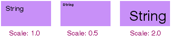
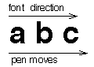
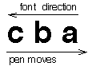
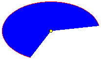

Constructor and Destructor
BView(BRect frame,
const char* name,
uint32 resizingMode,
uint32 flags);
BView(BMessage* archive);
Sets up a view with the frame rectangle, which is specified in the
coordinate system of its eventual parent, and assigns the BView an
identifying name, which can be NULL.
When it's created, a BView doesn't belong to a window and has no parent.
It's assigned a parent by having another BView adopt it with the
AddChild() function. If the other view is in a window, the BView becomes
part of that window's view hierarchy. A BView can be made a child of the
window's top view by calling BWindow's
version of the AddChild() function.
When the BView gains a parent, the values in
frame are interpreted in the
parent's coordinate system. The sides of the view must be aligned on
screen pixels. Therefore, the frame rectangle should not contain
coordinates with fractional values. Fractional coordinates will be
rounded to the first lower whole number (for example 1.2 will be rounded
down to 1.0).
The resizingMode mask determines the behavior of the view when its parent
is resized. It should combine one constant for horizontal resizing,
B_FOLLOW_LEFT
B_FOLLOW_RIGHT
B_FOLLOW_LEFT_RIGHT
B_FOLLOW_H_CENTER
with one for vertical resizing:
B_FOLLOW_TOP
B_FOLLOW_BOTTOM
B_FOLLOW_TOP_BOTTOM
B_FOLLOW_V_CENTER
For example, if B_FOLLOW_LEFT is chosen, the margin between the left side
of the view and the left side of its parent will remain
constant—the view will "follow" the parent's left side. Similarly,
if B_FOLLOW_RIGHT is chosen, the view will follow the parent's right
side. If B_FOLLOW_H_CENTER is chosen, the view will maintain a constant
relationship to the horizontal center of the parent.
If the constants name opposite sides of the view rectangle—left and
right, or top and bottom—the view will necessarily be resized in
that dimension when the parent is. For example, B_FOLLOW_LEFT_RIGHT means
that the margin between the left side of the view and left side of the
parent will remain constant, as will the margin between the right side of
the view and the right side of the parent. As the parent is resized
horizontally, the child will be resized with it. Note that
B_FOLLOW_LEFT_RIGHT is not the same as combining B_FOLLOW_LEFT and
B_FOLLOW_RIGHT, an illegal move. The resizingMode mask can contain only
one horizontal constant and one vertical constant.
If a side is not mentioned in the mask, the distance between that side of
the view and the corresponding side of the parent is free to fluctuate.
This may mean that the view will move within its parent's coordinate
system when the parent is resized. B_FOLLOW_RIGHT plus B_FOLLOW_BOTTOM,
for example, would keep a view from being resized, but the view will move
to follow the right bottom corner of its parent whenever the parent is
resized. B_FOLLOW_LEFT plus B_FOLLOW_TOP prevents a view from being
resized and from being moved.
In addition to the constants listed above, there are two other
possibilities:
B_FOLLOW_ALL_SIDES
B_FOLLOW_NONE
B_FOLLOW_ALL_SIDES is a shorthand for B_FOLLOW_LEFT_RIGHT and
B_FOLLOW_TOP_BOTTOM. It means that the view will be resized in tandem
with its parent, both horizontally and vertically.
B_FOLLOW_NONE behaves just like
B_FOLLOW_LEFT | B_FOLLOW_TOP; the view
maintains the same position in its parent's coordinate system, but not in
the screen coordinate system.
Typically, a parent view is resized because the user resizes the window
it's in. When the window is resized, the top view is too. Depending on
how the resizingMode flag is set for the top view's children and for the
descendants of its children, automatic resizing can cascade down the view
hierarchy. A view can also be resized programmatically by the
ResizeTo()
and ResizeBy()
functions.
The resizing mode can be changed after construction with the
SetResizingMode() function.
The flags mask determines what kinds of notifications the BView will
receive. It can be any combination of the following constants:
| Constant | Description |
|---|
B_WILL_DRAW
|
Indicates that the BView does some drawing of its own and therefore
can't be ignored when the window is updated. If this flag isn't set, the
BView won't receive update notifications—its
Draw() function won't
be called—and it won't be erased to its background view color if
the color is other than white.
|
B_PULSE_NEEDED
|
Indicates that the BView should receive
Pulse() notifications.
|
B_FRAME_EVENTS
|
Indicates that the BView should receive
FrameResized() and
FrameMoved()
notifications when its frame rectangle
changes—typically as a result of the automatic resizing behavior
described above.
FrameResized()
is called when the dimensions of the view
change; FrameMoved()
is called when the position of its left top corner
in its parent's coordinate system changes.
|
B_FULL_UPDATE_ON_RESIZE
|
Indicates that the entire view should be updated when it's resized. If
this flag isn't set, only the portions that resizing adds to the view
will be included in the clipping region. This doesn't affect the view's
children; their own flags determine when updates will occur.
|
B_NAVIGABLE
|
Indicates that the BView can become the focus view for keyboard
actions. This flag makes it possible for the user to navigate to the view
and put it in focus by pressing the Tab key. See
"Keyboard Navigation" at
the beginning of this chapter.
|
B_NAVIGABLE_JUMP
|
Marks the position of a group of views for keyboard navigation. By
pressing
Control+Tab,
the user can jump from group to group. The focus lands on the
first BView in the group that has the
B_NAVIGABLE flag set.
This may be the same
BView that has the
B_NAVIGABLE_JUMP marker, or
the
B_NAVIGABLE_JUMP BView may
be the parent of a group of B_NAVIGABLE views.
|
B_SUBPIXEL_PRECISE
|
Instructs the rendering methods to use subpixel precision when
drawing. If you don't set this flag, coordinates are rounded to the
nearest unit.
|
If none of these constants apply, flags can be
NULL. The flags can be
reset after construction with the
SetFlags() function.
See also:
BHandler::SetName()
virtual ~BView();
Frees all memory the BView allocated, and ensures that each of the
BView's descendants in the view hierarchy is also destroyed.
It's an error to delete a BView while it remains attached to a window.
Call
RemoveChild() or
RemoveSelf()
before using the delete operator.
AttachedToWindow(), AllAttached()
virtual void AttachedToWindow();virtual void AllAttached();
Implemented by derived classes to complete the initialization of the
BView when it's assigned to a window.
A BView is assigned to a window
when it, or one of its ancestors in the view hierarchy, becomes a child
of a view already attached to a window.
AttachedToWindow() is called immediately
after the BView is formally made
a part of the window's view hierarchy and after it has become known to
the Application Server and its graphics parameters are set. The
Window()
function can identify which
BWindow the
BView belongs to.
All of the BView's children, if it has any, also become attached to the
window and receive their own AttachedToWindow() notifications. Parents
receive the notification before their children, but only after all views
have become attached to the window and recognized as part of the window's
view hierarchy. This function can therefore depend on all ancestor and
descendant views being in place.
For example, AttachedToWindow() can be implemented to set a view's
background color to the same color as its parent, something that can't be
done before the view belongs to a window and knows who its parent is.
void MyView::AttachedToWindow()
{
if ( Parent() )
SetViewColor(Parent()->ViewColor());
baseClass::AttachedToWindow();
}
The AllAttached() notification follows on the heels of
AttachedToWindow(), but works its way up the view hierarchy rather than
down. When AllAttached() is called for a
BView, all its descendants have
received both AttachedToWindow() and
AllAttached() notifications.
Therefore, parent views can depend on any calculations that their
children make in either function. For example, a parent can resize itself
to fit the size of its children, where their sizes depend on calculations
done in AttachedToWindow().
The default (BView) version of both these functions are empty.
See also:
AddChild()
DetachedFromWindow(), AllDetached()
virtual void DetachedFromWindow();virtual void AllDetached();
Implemented by derived classes to make any adjustments necessary when the
BView is about to be removed from a window's view hierarchy. These two
functions parallel the more commonly implemented
AttachedToWindow() and
AllAttached() functions.
DetachedFromWindow() notifications work their way down the hierarchy of
views being detached, followed by AllDetached() notifications, which work
their way up the hierarchy. The second function call permits an ancestor
view to take actions that depend on calculations a descendant might have
to make when it's first notified of being detached.
The BView is still attached to the window when both functions are called.
virtual void Draw(BRect updateRect);
Implemented by derived classes to draw the updateRect portion of the
view. The update rectangle is stated in the BView's coordinate system.
Draw() is called as the result of update messages whenever the view needs
to present itself on-screen. This may happen when:
The window the view is in is first shown on-screen, or shown after
being hidden (see the
BWindow
version of the
Hide()
function).
The view is made visible after being hidden (see
BView's
Hide()
function).
Obscured parts of the view are revealed, as when a window is moved
from in front of the view or an image is dragged across it.
The view is resized.
The contents of the view are scrolled (see
ScrollBy()).
A child view is added, removed, or resized.
A rectangle has been invalidated that includes at least some of the
view (see
Invalidate()).
CopyBits()
can't completely fill a destination rectangle within the view.
Draw() is also called from a
BPrintJob object's
DrawView() function to
draw the view on a printed page.
IsPrinting()
returns true when the
BView
is drawing for the printer and false when it's drawing to the screen.
When printing, you may want to recalculate layouts, substitute fonts,
turn antialiasing off, scale the size of a coordinate unit, or make other
adjustments to ensure the quality of the printed image.
When drawing to the screen, the updateRect is the smallest rectangle that
encloses the current clipping region for the view. Since the Application
Server won't render anything on-screen that's outside the clipping
region, an application will be more efficient if it avoids producing
drawing instructions for images that don't intersect with the rectangle.
For still more efficiency and precision, you can ask for the clipping
region itself (by calling
GetClippingRegion())
and confine drawing to images that intersect with it.
When printing, the updateRect matches the rectangle passed to
DrawView()
and may lie outside the clipping region. The clipping region is not
enforced for printing, but the Print Server clips the BView's drawing to
the specified rectangle.
See also:
BWindow::UpdateIfNeeded()
virtual void DrawAfterChildren(BRect updateRect);
This function is similar (in fact, almost identical) to
Draw(). The only
difference is that DrawAfterChildren()
is called after all children have drawn during a screen update.
This is in contrast to Draw(),
which draws before any children have drawn. In general,
Draw() will be used for
almost all of your drawing needs; DrawAfterChildren() is intended for use
in the rare circumstances where you wish a view to be able to draw on top
of its child views.
Other details are as for Draw().
virtual void FrameMoved(BPoint newLocation);
Implemented by derived classes to respond to a notification that the view
has moved within its parent's coordinate system. newLocation gives the
new location, within the coordinate system of the view's window, of the
left top corner of the BView's frame rectangle.
FrameMoved() is called only if the
B_FRAME_EVENTS flag is set and the
BView is attached to a window.
If the view is both moved and resized, FrameMoved() is called before
FrameResized().
This might happen, for example, if the BView's automatic
resizing mode is a combination of B_FOLLOW_TOP_BOTTOM
and B_FOLLOW_RIGHT
and its parent is resized both horizontally and vertically.
BView's version of this function is empty.
Currently, FrameMoved() is also called when a hidden window is shown
on-screen.
See also:
MoveBy(),
BWindow::FrameMoved(),
SetFlags()
virtual void FrameResized(float width,
float height);
Implemented by derived classes to respond to a notification that the view
has been resized. The arguments state the new width and height of the
view. The resizing could have been the result of a user action (resizing
the window) or of a programmatic one (calling
ResizeTo() or
ResizeBy()).
FrameResized() is called only if the
B_FRAME_EVENTS flag is set and the
BView is attached to a window.
BView's version of this function is empty.
See also:
BWindow::FrameResized(),
SetFlags()
GetPreferredSize(), ResizeToPreferred()
virtual void GetPreferredSize(float* width,
float* height);virtual void ResizeToPreferred();
GetPreferredSize() is implemented by derived classes to write the
preferred width and height of the view into the variables the width and
height arguments refer to. Derived classes generally make this
calculation based on the view's contents. For example, a
BButton object
reports the optimal size for displaying the button border and label given
the current font.
ResizeToPreferred() resizes the
BView's frame rectangle to the preferred
size, keeping its left and top sides constant.
See also:
ResizeTo()
virtual void KeyDown(const char* bytes,
int32 numBytes);
Implemented by derived classes to respond to a
B_KEY_DOWN message
reporting keyboard input. Whenever a BView is the focus view of the
active window, it receives a KeyDown() notification for each character
the user types, except for those that:
Are produced while a Command key is held down. Command key events are
interpreted as keyboard shortcuts.
Are produced by the Tab key when an Option key is held down.
Option+Tab
events are invariably interpreted as instructions to change
the focus view (for keyboard navigation); they work even where Tab
alone does not.
Can operate the default button in a window. The
BButton object's
KeyDown()
function is called, rather than the focus view's.
The first argument, bytes, is an array that encodes the character mapped
to the key the user pressed. The second argument, numBytes, tells how
many bytes are in the array; there will always be at least one. The bytes
value follows the character encoding of the BView's font. Typically, the
encoding is Unicode UTF-8 (B_UNICODE_UTF8), so there may be more than one
byte per character. The bytes array is not null-terminated; '0' is a
valid character value.
The character value takes into account any modifier keys that were held
down or keyboard locks that were on at the time of the keystroke. For
example, Shift+i
is reported as uppercase 'I' (0x49) and
Control+i is
reported as a B_TAB (0x09).
Single-byte characters can be tested against
ASCII
codes and these constants:
B_BACKSPACE
B_ENTER
B_RETURN
B_SPACE
B_TAB
B_ESCAPE
B_LEFT_ARROW
B_RIGHT_ARROW
B_UP_ARROW
B_DOWN_ARROW
B_INSERT
B_DELETE
B_HOME
B_END
B_PAGE_UP
B_PAGE_DOWN
B_FUNCTION_KEY
B_ENTER and B_RETURN
are the same character, a newline ('\n').
Only keys that generate characters produce key-down events; the modifier
keys on their own do not.
You can determine which modifier keys were being held down at the time of
the event by calling
BLooper's
CurrentMessage()
function and looking up the "modifiers" entry in the
BMessage
it returns. If the bytes character
is B_FUNCTION_KEY and you want to know which key produced the character,
you can look up the "key" entry in the
BMessage
and test it against these constants:
For example:
if ( bytes[0] == B_FUNCTION_KEY ) {
BMessage *msg = Window()->CurrentMessage();
if ( msg ) {
int32 key;
msg->FindInt32("key", &key);
switch ( key ) {
case B_F1_KEY:
. . .
break;
case B_F2_KEY:
. . .
break;
. . .
}
}
}
The BView version of KeyDown()
handles keyboard navigation from view to view through
B_TAB characters. If the view you define is navigable, its
KeyDown() function should permit
B_SPACE characters to operate the object
and perhaps allow the arrow keys to navigate inside the view. It should
also call the inherited version of
KeyDown() to enable between-view
navigation. For example:
void MyView::KeyDown(const char *bytes, int32 numBytes)
{
if ( numBytes == 1 ) {
switch ( bytes[0] ) {
case B_SPACE:
break;
case B_RIGHT_ARROW:
break;
case B_LEFT_ARROW:
break;
default:
baseClass::KeyDown(bytes, numBytes);
break;
}
}
}
If your BView is navigable but needs to respond to B_TAB
characters—for example, if it permits users to insert tabs in a
text string—its KeyDown() function should simply grab the
characters and not pass them to the inherited function. Users will have
to rely on the
Option+Tab
combination to navigate from your view.
See also: the Keyboard Information special topic,
B_KEY_DOWN in the
Keyboard Messages appendix,
BWindow::SetDefaultButton(),
modifiers()
virtual void KeyUp(const char* bytes,
int32 numBytes);
Implemented by derived classes to respond to a
B_KEY_UP
message reporting that the user released a key on the keyboard.
The same set of keys that produce
B_KEY_DOWN
messages when they're pressed produce
B_KEY_UP
messages when they're released. The bytes
and numBytes arguments encode
the character mapped to the key the user released; they work exactly like
the same arguments passed to
KeyDown().
Some B_KEY_DOWN
messages are swallowed by the system and are never dispatched by calling
KeyDown();
others are dispatched, but not to the focus view. In contrast, all
B_KEY_UP
messages are dispatched by calling
KeyUp()
for the focus view of the active window. Since the focus view and
active window can change between the time a key is pressed and the time
it's released, this may or may not be the same BView that was notified of
the B_KEY_DOWN
message.
virtual void MouseDown(BPoint point);
MouseDown() is a hook function that's invoked when the user depresses a
mouse button (or other pointing device button, not including joysticks).
The location of the cursor at the time of the event is given by point in
the BView's coordinates. See
B_MOUSE_DOWN
for the message format. Also see
SetMouseEventMask()
for information on extending the view's event mask while the mouse is being held down.
The BView version of MouseDown() is empty.
virtual void MouseMoved(BPoint point,
uint32 transit,
const BMessage* message);
Implemented by derived classes to respond to reports of mouse-moved
events associated with the view. As the user moves the cursor over a
window, the Application Server generates a continuous stream of messages
reporting where the cursor is located.
The first argument, point, gives the cursor's
new location in the BView's
coordinate system. The second argument, transit, is one of four constants,
B_ENTERED_VIEW
B_INSIDE_VIEW
B_EXITED_VIEW
B_OUTSIDE_VIEW
which explains whether the cursor has just entered the visible region of
the view, is now inside the visible region having previously entered, has
just exited from the view, or is currently outside the visible region of
the view. When the cursor passes from one view to another, MouseMoved()
is called on each of the BViews, once with a transit code of
B_EXITED_VIEW and the other with a code of B_ENTERED_VIEW.
If the user is dragging a bundle of information from one location to
another, the final argument, message, is a pointer to the
BMessage object
that holds the information. If a message isn't being dragged,
message is NULL.
The default version of MouseMoved() is empty.
virtual void MouseUp(BPoint point);
Implemented by derived classes to respond to a message reporting a
mouse-up event within the view. The location of the cursor at the time of
the event is given by point in the BView's coordinates.
virtual void Pulse();
Implemented by derived classes to do something at regular intervals.
Pulses are regularly timed events, like the tick of a clock or the beat
of a steady pulse. A BView receives
Pulse() notifications when no other
messages are pending, but only if it asks for them with the
B_PULSE_NEEDED flag.
The interval between Pulse() calls can be set with
BWindow's
SetPulseRate()
function. The default interval is around 500 milliseconds.
The pulse rate is the same for all views within a window, but can vary
between windows.
Derived classes can implement a Pulse() function to do something that
must be repeated continuously. However, for time-critical actions, you
should implement your own timing mechanism.
The BView version of this function is empty.
See also:
SetFlags()
the BView
constructor,
virtual void TargetedByScrollView(BScrollView* scroller);
Implemented by derived classes to respond to a notification that the
BView has become the target of the scroller
BScrollView
object. This function is called when the
BScrollView
sets its target, which it does on
construction. The target is the object whose contents will be scrolled.
BView's implementation of this function is empty.
See also: The various scrolling-related
functions in BView
Input Related Functions.
virtual void WindowActivated(bool active);
Implemented by derived classes to take whatever steps are necessary when
the BView's window becomes the active window, or when the window gives up
that status. If active is true,
the window has become active. If active
is false, it no longer is the active window.
All objects in the view hierarchy receive
WindowActivated()
notifications when the status of the window changes.
BView's version of this function is empty.
See also:
BWindow::WindowActivated()
BRect Bounds() const;
Returns the BView's bounds rectangle.
ConvertToParent(), ConvertFromParent()
BPoint ConvertToParent(BPoint localPoint) const;void ConvertToParent(BPoint* localPoint) const;
BRect ConvertToParent(BRect localRect) const;void ConvertToParent(BRect* localRect) const;
BPoint ConvertFromParent(BPoint parentPoint) const;void ConvertFromParent(BPoint* parentPoint) const;
BRect ConvertFromParent(BRect parentRect) const;void ConvertFromParent(BRect* parentRect) const;
These functions convert points and rectangles to and from the coordinate
system of the BView's parent.
ConvertToParent() converts localPoint or
localRect from the BView's coordinate system to the coordinate system of
its parent BView.
ConvertFromParent() does the opposite; it converts
parentPoint or parentRect from the coordinate system of the BView's
parent to the BView's own coordinate system.
If the point or rectangle is passed by value, the function returns the
converted value. If a pointer is passed, the conversion is done in place.
Both functions fail if the BView isn't attached to a window.
See also:
ConvertToScreen()
ConvertToScreen(), ConvertFromScreen()
BPoint ConvertToScreen(BPoint localPoint) const;void ConvertToScreen(BPoint* localPoint) const;
BRect ConvertToScreen(BRect localRect) const;void ConvertToScreen(BRect* localRect) const;
BPoint ConvertFromScreen(BPoint screenPoint) const;void ConvertFromScreen(BPoint* screenPoint) const;
BRect ConvertFromScreen(BRect screenRect) const;void ConvertFromScreen(BRect* screenRect) const;
ConvertToScreen() converts
localPoint or localRect from the BView's
coordinate system to the global screen coordinate system.
ConvertFromScreen() makes the opposite conversion; it converts
screenPoint or screenRect from the screen coordinate system to the
BView's local coordinate system.
If the point or rectangle is passed by value, the function returns the
converted value. If a pointer is passed, the conversion is done in place.
The screen coordinate system has its origin, (0.0, 0.0), at the left top
corner of the main screen.
Neither function will work if the BView isn't attached to a window.
See also:
BWindow::ConvertToScreen(),
ConvertToParent()
BRect Frame() const;
Returns the BView's frame rectangle. The frame rectangle is first set by
the BView constructor and is altered only when the view is moved or
resized. It's stated in the coordinate system of the BView's parent.
virtual void Hide();virtual void Show();
These functions hide a view and show it again.
Hide() makes the view invisible without removing it from the view
hierarchy. The visible region of the view will be empty and the BView
won't receive update messages. If the BView has children, they also are
hidden.
Show() unhides a view that had been hidden. This function doesn't
guarantee that the view will be visible to the user; it merely undoes the
effects of Hide(). If the view didn't have any visible area before being
hidden, it won't have any after being shown again (given the same
conditions).
Calls to Hide() and Show()
can be nested. For a hidden view to become
visible again, the number of Hide() calls must be matched by an equal
number of Show() calls.
However, Show() can only undo a previous Hide() call on the same view. If
the view became hidden when Hide() was called to hide the window it's in
or to hide one of its ancestors in the view hierarchy, calling Show() on
the view will have no effect. For a view to come out of hiding, its
window and all its ancestor views must be unhidden.
Hide() and Show()
can affect a view before it's attached to a window. The
view will reflect its proper state (hidden or not) when it becomes
attached. Views are created in an unhidden state.
See also:
BWindow::Hide(),
IsHidden()
bool IsFocus();
Returns true if the BView
is the current focus view for its window, and
false if it's not. The focus view changes as the user chooses one view to
work in and then another—for example, as the user moves from one
text field to another when filling out an on-screen form. The change is
made programmatically through the
MakeFocus() function.
See also:
BWindow::CurrentFocus()
bool IsHidden();
Returns true if the view has been hidden by the
Hide() function, and
false otherwise.
This function returns true whether
Hide()
was called to hide the BView
itself, to hide an ancestor view, or to hide the BView's window. When a
window is hidden, all its views are hidden with it. When a BView is
hidden, all its descendants are hidden with it.
If the view has no visible region—perhaps because it lies outside
its parent's frame rectangle or is obscured by a window in
front—this function may nevertheless return false. It reports only
whether the Hide()
function has been called to hide the view, hide one of
the view's ancestors in the view hierarchy, or hide the window where the
view is located.
If the BView isn't attached to a window,
IsHidden() returns the state
that it will assume when it becomes attached. By default, views are not
hidden.
bool IsPrinting() const;
Returns true if the BView
is being asked to draw for the printer, and
false if the drawing it produces will be rendered on-screen (or if the
BView isn't being asked to draw at all).
This function's result is only reliable when called from within
Draw() or
DrawAfterChildren()
to determine whether the drawing it does is destined for
the printer or the screen. When drawing to the printer, the BView may
choose different parameters—such as fonts, bitmap images, or
colors—than when drawing to the screen.
Note

You should avoid calling this function from outside
Draw() and
DrawAfterChildren();
however, if you absolutely have to do it, lock the view
first. Failure to do so may bring up the debugger—if not in BeOS 5,
it may in future versions of BeOS.
See also:
the BPrintJob class
BPoint LeftTop() const;
Returns the coordinates of the left top corner of the view—the
smallest x and y coordinate values within the bounds rectangle.
See also:
BRect::LeftTop(),
Bounds()
void MoveBy(float horizontal,
float vertical);
void MoveTo(BPoint point);
void MoveTo(float x,
float y);
These functions move the view in its parent's coordinate system without
altering its size.
MoveBy() adds horizontal coordinate units to the left and right
components of the frame rectangle and vertical units to the top and
bottom components. If horizontal and
vertical are positive, the view
moves downward and to the right. If they're negative, it moves upward and
to the left.
MoveTo() moves the upper left corner of the view
to point or to (x, y)
in the parent view's coordinate system and adjusts all
coordinates in the frame rectangle accordingly.
Neither function alters the BView's bounds rectangle or coordinate system.
None of the values passed to these functions should specify fractional
coordinates; the sides of a view must line up on screen pixels.
Fractional values will be rounded to the closest whole number.
If the BView is attached to a window, these functions cause its parent
view to be updated, so the BView is immediately displayed in its new
location. If it doesn't have a parent or isn't attached to a window,
these functions merely alter its frame rectangle.
See also:
FrameMoved(),
ResizeBy(),
Frame()
void ResizeBy(float horizontal,
float vertical);void ResizeTo(float width,
float height);
These functions resize the view, without moving its left and top sides.
ResizeBy() adds horizontal
coordinate units to the width of the view and
vertical units to the height.
ResizeTo() makes the view width units wide
and height units high. Both functions adjust the right and bottom
components of the frame rectangle accordingly.
Since a BView's frame rectangle must be aligned on screen pixels, only
integral values should be passed to these functions. Values with
fractional components will be rounded to the nearest whole integer.
If the BView is attached to a window, these functions cause its parent
view to be updated, so the BView is immediately displayed in its new
size. If it doesn't have a parent or isn't attached to a window, these
functions merely alter its frame and bounds rectangles.
Note
If the view isn't attached to a window, its frame and bounds rectangles
are adjusted, but its children, if any, don't get corresponding
adjustments.
See also:
FrameResized(),
MoveBy(),
Frame(),
BRect::Width()
virtual void SetFlags(uint32 mask);uint32 Flags() const;
These functions set and return the flags that inform the Application
Server about the kinds of notifications the BView should receive. The
mask set by SetFlags() and the return value of
Flags() is formed from
combinations of the following constants:
B_WILL_DRAW
B_FULL_UPDATE_ON_RESIZE
B_FRAME_EVENTS
B_PULSE_NEEDED
B_NAVIGABLE
B_NAVIGABLE_JUMP
B_SUBPIXEL_PRECISE
The flags are first set when the BView is constructed; they're explained
in the description of the BView constructor. The mask can be 0.
To set just one of the flags, combine it with the current setting:
myView->SetFlags(Flags() | B_FRAME_EVENTS);
See also:
The BView constructor,
SetResizingMode()
void SetOrigin(BPoint pt);
void SetOrigin(float x,
float y);
BPoint Origin() const;
Sets and retrieves the local origin of the BView's coordinate system.
The actual origin used by the Application Server is the sum of the local
origin (as set by this method) and the origins stored on the state stack
(properly scaled).
SetResizingMode(), ResizingMode()
virtual void SetResizingMode(uint32 mode);uint32 ResizingMode() const;
These functions set and return the BView's automatic
resizing mode. The resizing mode is first set when the
BView is constructed. The various possible modes are
explained where the constructor is
described.
See also:
SetFlags()
void SetViewCursor(const BCursor* cursor,
bool sync = true) const;
Sets the specified cursor as the view's cursor; while the mouse is inside
the view, this cursor will be displayed (unless of course the cursor is
hidden or obscured).
If sync is true, the
Application Server will be synchronized by this call, forcing the change to
take place immediately. If sync is
false, the change will take place when the Application
Server naturally gets to the change in its queue of pending requests.
AddChild(), RemoveChild()
void AddChild(BView* aView,
BView* sibling = NULL);bool RemoveChild(BView* aView);
AddChild() makes aView a
child of the BView, provided that aView doesn't
already have a parent. The new child is added to the
BView's list of children immediately before the
named sibling BView. If the
sibling is NULL (as it is by
default), aView isn't added in front of any other
view—in other words, it's added to the end of the list. If the
BView is attached to a window,
aView and all its descendants become attached to the
same window. Each of them is notified of this change through
AttachedToWindow() and
AllAttached()
function calls.
AddChild() fails if aView
already belongs to a view hierarchy. A view can
live with only one parent at a time. It also fails if sibling is not
already a child of the BView.
RemoveChild() severs the link between the
BView and aView, so that aView
is no longer a child of the BView;
aView retains all its own children and
descendants, but they become an isolated fragment of a view hierarchy,
unattached to a window. Each removed view is notified of this change
through
DetachedFromWindow() and
AllDetached()
function calls.
A BView must be removed from a window before it can be destroyed.
If it succeeds in removing aView, RemoveChild()
returns true. If it
fails, it returns false. It will fail if aView
is not, in fact, a current child of the BView.
When a BView object becomes attached to a
BWindow, two other connections
are automatically established for it:
The view is added to the
BWindow's flat list of
BHandler objects,
making it an eligible target for messages the
BWindow dispatches.
The BView's parent view becomes its next handler. Messages that the
BView doesn't recognize will be passed to its parent.
Removing a BView from a window's view hierarchy also removes it from the
BWindow's flat list of
BHandler
objects; the BView will no longer be
eligible to handle messages dispatched by the
BWindow.
See also:
BWindow::AddChild(),
BLooper::AddHandler(),
BHandler::SetNextHandler(),
RemoveSelf(),
AttachedToWindow(),
DetachedFromWindow()
BView* FindView(const char* name) const;
Returns the BView identified by name,
or NULL if the view can't be found.
Names are assigned by the BView constructor and can be modified by the
SetName() function inherited from
BHandler.
FindView() begins the search by checking
whether the BView's name matches
name. If not, it continues to search down the view hierarchy, among the
BView's children and more distant descendants. To search the entire view
hierarchy, use the
BWindow
version of this function.
Parent(), NextSibling(), PreviousSibling(), ChildAt(), CountChildren()
BView* Parent() const;BView* NextSibling() const;BView* PreviousSibling() const;BView* ChildAt(int32 index) const;int32 CountChildren() const;
These functions provide various ways of navigating the view hierarchy.
Parent() returns the BView's
parent view, unless the parent is the top
view of the window, in which case it returns NULL.
It also returns NULL
if the BView doesn't belong to a view hierarchy and has no parent.
All the children of the same parent are arranged in a linked list.
NextSibling() returns the next sibling of
the BView in the list, or NULL
if the BView is the last child of its parent.
PreviousSibling() returns
the previous sibling of the BView, or NULL
if the BView is the first
child of its parent.
ChildAt() returns the view at index
in the list of the BView's children,
or NULL if the BView has no such child.
Indices begin at 0 and there are
no gaps in the list. CountChildren() returns the number of children the
BView has. If the BView has no
children, CountChildren() returns NULL, as
will ChildAt() for all indices, including 0.
To scan the list of a BView's children, you can increment the index
passed to ChildAt() until it returns
NULL. However, it's more efficient
to ask for the first child and then use NextSibling() to walk down the
sibling list. For example:
BView *child;
if ( child = myView->ChildAt(0) ) {
while ( child ) {
. . .
child = child->NextSibling();
}
}
bool RemoveSelf();
Removes the BView from its parent and returns
true, or returns false if
the BView doesn't have a parent or for some reason can't be removed from
the view hierarchy.
This function acts just like
RemoveChild(),
except that it removes the
BView itself rather than one of its children.
See also:
AddChild()
BeginRectTracking(), EndRectTracking()
void BeginRectTracking(BRect rect,
uint32 how = B_TRACK_WHOLE_RECT);void EndRectTracking();
These functions instruct the Application Server to display a rectangular
outline that will track the movement of the cursor.
BeginRectTracking()
puts the rectangle on-screen and initiates tracking;
EndRectTracking()
terminates tracking and removes the rectangle. The initial rectangle,
rect, is specified in the BView's coordinate system.
This function supports two kinds of tracking, depending on the constant
passed as the how argument:
| Constant | Description |
|---|
B_TRACK_WHOLE_RECT
| The whole rectangle moves with the cursor. Its
position changes, but its size remains fixed. |
B_TRACK_RECT_CORNER
| The left top corner of the rectangle remains fixed
within the view while its right and bottom edges move with the cursor. |
Tracking is typically initiated from within a BView's
MouseDown()
function and is terminated in
MouseUp()
Initiates a drag-and-drop session.
message, is a
BMessage
object that bundles the information that will be
dragged and dropped on the destination view. The caller retains
responsibility for this object and can delete it after DragMessage()
returns (the BView makes a copy of the message).
image, is a bitmap that the user can drag. The bitmap is automatically
freed when the message is dropped.
Note
1 bit-per-pixel bitmaps aren't supported; you should avoid using them.
point locates the hotspot within image (in the bitmap's coordinate
system). This is the point that's aligned with the location passed to
MouseDown()
or returned by
GetMouse().
rect defines the dimensions of an outline rectangle that you can instead
of a bitmap. The rectangle is stated in the BView's coordinate system.
replyTarget, names the object that you want to handle a message that
might be sent in reply to the dragged message. If
replyTarget is NULL, as
it is by default, any reply that's received will be directed to the BView
object that initiated the drag-and-drop session.
dragMode defines the drawing_mode
which will be used to draw image as the
image is dragged around. This is provided primarily so that transparent
or partially transparent images can be dragged around (using the
B_OP_ALPHA drawing mode).
This function works only for BView
objects that are attached to a window.
void GetMouse(BPoint* cursor,
uint32* buttons,
bool checkQueue = true);
Provides the location of the cursor and the state of the mouse buttons.
The position of the cursor is recorded in the variable referred to by
cursor; it's provided in the
BView's own coordinates. A bit is set in the
variable referred to by buttons for each mouse button that's down. This
mask may be 0 (if no buttons are down) or it may contain one or more of
the following constants:
B_PRIMARY_MOUSE_BUTTON
B_SECONDARY_MOUSE_BUTTON
B_TERTIARY_MOUSE_BUTTON
The cursor doesn't have to be located within the view for this function
to work; it can be anywhere on-screen. However, the BView must be
attached to a window.
If the checkQueue flag is set to false,
GetMouse() provides information
about the current state of the mouse buttons and the current location of
the cursor.
If checkQueue is true, as it
is by default, this function first looks in
the message queue for any pending reports of mouse-moved or mouse-up
events. If it finds any, it takes the one that has been in the queue the
longest (the oldest message), removes it from the queue, and reports the
cursor location and button states that were recorded in the message. Each
GetMouse() call removes another message from the queue. If the queue
doesn't hold any B_MOUSE_MOVED or B_MOUSE_UP
messages, GetMouse() reports
the current state of the mouse and cursor, just as if checkQueue were
false.
If checkQueue is true,
and the view's parent window has pending update
events, GetMouse() causes those update events to be processed.
You shouldn't use this function to track the mouse; implement the
MouseMoved() function instead.
See also:
modifiers()
virtual void MakeFocus(bool focused = true);
Makes the BView the current focus view for its
window (if the focused
flag is true), or causes it to give up that status
(if focused is false).
The focus view is the view that displays the current selection and is
expected to handle reports of key-down events when the window is the
active window. There can be no more than one focus view per window at a
time.
When called to make a BView the focus view, this function invokes
MakeFocus() for the previous focus view,
passing it an argument of false.
It's thus called twice—once for the new and once for the old focus
view.
Calling MakeFocus() is the only way to make a view the focus view; the
focus doesn't automatically change on mouse-down events. BViews that can
display the current selection (including an insertion point) or that can
accept pasted data should call MakeFocus()in their
MouseDown() functions.
A derived class can override MakeFocus() to add code that takes note of
the change in status. For example, a BView that displays selectable data
may want to highlight the current selection when it becomes the focus
view, and remove the highlighting when it's no longer the focus view. A
BView that participates in the keyboard navigation system should visually
indicate that it can be operated from the keyboard when it becomes the
focus view, and remove that indication when the user navigates to another
view and it's notified that it's no longer the focus view.
If the BView isn't attached to a window, this function has no effect.
See also:
BWindow::CurrentFocus(),
IsFocus()
BScrollBar* ScrollBar(orientation posture) const;
Returns a BScrollBar
object that scrolls the BView (that has the BView as
its target). The requested scroll bar has the posture
orientation—B_VERTICAL or B_HORIZONTAL.
If the BView isn't the
target of a scroll bar with the specified orientation, this function
returns NULL.
See also:
BScrollBar::SetTarget()
void ScrollBy(float horizontal,
float vertical);
virtual void ScrollTo(BPoint point);
inline void ScrollTo(float x,
float y);
These functions scroll the contents of the view, provided that the BView
is attached to a window.
ScrollBy() adds horizontal
to the left and right components of the
BView's bounds rectangle, and vertical
to the top and bottom components.
This serves to shift the display horizontal coordinate units to the left
and vertical units upward. If horizontal
and vertical are negative, the
display shifts in the opposite direction.
ScrollTo() shifts the contents of the view as much as necessary to put
point—or
(x, y)—at the upper left corner of its bounds
rectangle. The point is specified in the BView's coordinate system.
Anything in the view that was visible before scrolling and also visible
afterwards is automatically redisplayed at its new location. The
remainder of the view is invalidated, so the BView's
Draw() function will
be called to fill in those parts of the display that were previously
invisible. The update rectangle passed to
Draw() will be the smallest
possible rectangle that encloses just these new areas. If the view is
scrolled in only one direction, the update rectangle will be exactly the
area that needs to be drawn.
If the BView is the target of scroll bars,
ScrollBy() and ScrollTo()
notify the BScrollBar
objects of the change in the display so they can
update themselves to match. If the contents were scrolled horizontally,
they call the horizontal
BScrollBar's
SetValue() function and pass it the
new value of the left side of the bounds rectangle. If they were scrolled
vertically, they call
SetValue()
for the vertical
BScrollBar
and pass it the new value of the top of the bounds rectangle.
The inline version of ScrollTo()
works by creating a BPoint object and
passing it to the version that's declared virtual. Therefore, if you want
to override either function, you should override the virtual version.
(However, due to the peculiarities of C++, overriding any version of an
overloaded function hides all versions of the function. For continued
access to the nonvirtual version without explicitly specifying the
"BView::" prefix, simply copy the inline code from
interface/View.h into
the derived class.)
SetEventMask(), SetMouseEventMask() , EventMask()
status_t SetEventMask(uint32 events,
uint32 options = 0);status_t SetMouseEventMask(uint32 events,
uint32 options = 0);uint32 EventMask();
SetEventMask() lets you extend the scope of the mouse and keyboard events
that the view can receive. If events includes
B_POINTER_EVENTS, the view
will receive mouse events (aka pointer events) even when the mouse isn't
over the view; if it includes B_KEYBOARD_EVENTS, the view will receive
keyboard events even if the view isn't in focus. (We'll look at the
options argument below).
SetMouseEventMask() does the same thing as
SetEventMask(), except (1) it
can only be called from within an implementation of
MouseDown(), and (2)
the new events value—which is added to the current event
mask—is only in effect until (and including) the following mouse up
event. When the mouse is released, the view's previous event mask (as set
through SetEventMask()) is re-established.
The option arguments lets you request other event-handling modifications
(note that SetEventMask() only accepts the first of these options;
SetMouseEventMask() accepts all three):
| Constant | Description |
|---|
B_NO_POINTER_HISTORY.
| This tells the App Server to only send the most
recent pointer moved (i.e. mouse moved) event to your view (all "old"
events are thrown away). You use this option if your
MouseMoved()
implementation is too heavy to keep up with the mouse moved messages
that are pouring in. Of course, your view may lose some mouse movement
granularity, but that's the price you pay to stay in synch with the
user. |
B_SUSPEND_VIEW_FOCUS
| (SetMouseEventMask() only). Events that are
normally sent to the focus view are suppressed. In practice, this means
that while the mouse is held down, the keyboard is turned off. Note
that the view that's processing the
MouseDown()
messages doesn't have to be the focus view to suppress focused messages. |
B_LOCK_WINDOW_FOCUS
| (SetMouseEventMask() only). Prevents the view's
window from losing focused status while the mouse is down, even if the
mouse leaves the window's bounds. |
Note
To ask for an option without changing the event mask (or mouse event
mask), pass 0 as the events argument.
Note
Both SetEventMask() and
SetMouseEventMask() require that the view be
attached to a window; they have no effect if the view isn't already
attached.
EventMask() returns the view's event mask as set through
SetEventMask().
It doesn't consider the mask set in SetMouseEventMask().
MovePenBy(), MovePenTo(), PenLocation()
void MovePenBy(float horizontal,
float vertical);
void MovePenTo(BPoint point);
void MovePenTo(float x,
float y);
BPoint PenLocation() const;
These functions move the pen (without drawing a line) and report the
current pen location.
MovePenBy() moves the pen horizontal
coordinate units to the right and vertical units downward.
If horizontal or vertical are negative, the pen
moves in the opposite direction. MovePenTo() moves the pen to
point—or to (x, y)—in
the BView's coordinate system.
Some drawing functions also move the pen—to the end of whatever
they draw. In particular, this is true of
StrokeLine(),
DrawString(), and
DrawChar().
Functions that stroke a closed shape (such as
StrokeEllipse())
don't move the pen.
The pen location is a parameter of the BView's graphics environment,
which is maintained by both the Application Server and the BView. If the
BView doesn't belong to a window,
MovePenTo() and MovePenBy() cache the
location, so that later, when the BView becomes attached to a window, it
can be handed to the server to become the operable pen location for the
BView. If the BView belongs
to a window, these functions alter both the
server parameter and the client-side cache.
PenLocation() returns the point where the pen is currently positioned in
the BView's coordinate system. Because of the cache, this shouldn't
entail contacting the server. The default pen position is (0.0, 0.0).
See also:
SetPenSize()
void PushState();void PopState();
Saves and restores the state from the state stack. A state consists of
the following: local and global origins, local and global scales, drawing
mode, line cap and join modes, miter limit, pen size and location,
foreground and background color, stipple pattern, local and global
clipping regions, and the font context. When a state is saved to the
stack, a new state context is created, with a local scale of zero, a
local origin at (0,0), and no clipping region.
Warning

If the BView isn't attached to a window, these functions will crash the
application.
SetLineMode(), LineJoinMode(), LineCapMode(), LineMiterLimit()
void SetLineMode(cap_mode lineCap,
join_mode lineJoin,
float miterLimit = B_DEFAULT_MITER_LIMIT);cap_mode LineCapMode() const;join_mode LineJoinMode() const;float LineMiterLimit() const;
These methods implement support for PostScript-style line cap and join
modes. The cap mode determines the shape of the endpoints of stroked
paths, while the join mode determines the shape of the corners of the
paths (i.e. where two lines meet).
The following values of cap_mode are defined:
| Constant | Description |
|---|
B_ROUND_CAP
| A semicircle is drawn around the endpoint. Its diameter is
equal to the width of the line. |
B_BUTT_CAP
| The line is squared off and does not extend beyond the endpoint. |
B_SQUARE_CAP
| The line is squared off, extending past the endpoint for a
distance equal to half the width of the line. |
Additionally, the following values of join_mode are defined:
| Constant | Description |
|---|
B_ROUND_JOIN
| Acts identically to B_ROUND_CAP, except applied
to joins. |
B_MITER_JOIN
| The lines are extended until they touch. If they meet at an
angle greater than 2*arcsin(1/miterLimit), a bevel join is used instead. |
B_BEVEL_JOIN
| Butt end caps are used at the common endpoint and the empty
area between the caps is filled with a triangle. |
B_BUTT_JOIN
| Acts identically to B_BUTT_CAP, except
applied to joins. |
B_SQUARE_JOIN
| Acts identically to B_SQUARE_CAP, except
applied to joins. |
SetLineMode() sets the line and join modes and the miter limit while
LineCapMode(), LineJoinMode(),
and LineMiterLimit() return them. The line
mode affects all of the Stroke…() methods except for
Arc,
Ellipse, and
RoundRect.
void SetScale(float ratio);
Scales the coordinate system the view uses for drawing. The default scale
is 1.0; smaller ratio values reduce the size of the drawing coordinate
system; larger numbers magnify the system. For example, a ratio of 0.5
makes a subsequent drawing twice as small and moves the drawing closer to
the origin, and 2.0 makes it twice as big and moves it away, as shown
below.

Note
The scaling ratio only affects subsequent drawing operations! Changing
the scale doesn't affect the graphics already displayed in the view, the
view's frame rectangle and clipping region, the placement and size of
subviews, translation of mouse coordinates to and from view space, and so
forth.
Multiple SetScale() calls don't compound within the same graphics state,
but they do compound across pushed states:
aview->SetScale(0.5);
aview->SetScale(0.5);
bview->SetScale(0.5);
bview->PushState();
bview->SetScale(0.5);
Warning
The BView must be attached to a window
before you call this function.
virtual void SetPenSize(float size);float PenSize() const;
SetPenSize() sets the size of the BView's pen—the graphics
parameter that determines the thickness of stroked lines—and
PenSize() returns the current pen size. The pen size is stated in
coordinate units, but is translated to a device-specific number of pixels
for each output device.
The pen tip can be thought of as a brush that's centered on the line path
and held perpendicular to it. If the brush is broader than one pixel, it
paints roughly the same number of pixels on both sides of the path.
The default pen size is 1.0 coordinate unit. It can be set to any
nonnegative value, including 0.0. If set to 0.0, the size is translated
to one pixel for all devices. This guarantees that it will always draw
the thinnest possible line no matter what the resolution of the device.
Thus, lines drawn with pen sizes of 1.0 and 0.0 will look alike on the
screen (one pixel thick), but the line drawn with a pen size of 1.0 will
be 1/72 of an inch thick when printed, however many printer pixels that
takes, while the line drawn with a 0.0 pen size will be just one pixel
thick.
The pen size is a parameter of the BView's graphics
environment maintained by the Application Server and cached by the
BView. If the BView isn't
attached to a window, SetPenSize() records the
size so that later, when the BView is added to a
window and becomes known to the server, the cached value can automatically
be established as the operable pen size for the
BView. If the BView belongs
to a window, this function changes both the server and the cache.
See also:
"The Pen"
in the chapter overview,
StrokeArc(),
MovePenBy()
SetHighColor(), HighColor() , SetLowColor() , LowColor()
virtual void SetHighColor(rgb_color color);
inline void SetHighColor(uchar red,
uchar green,
uchar blue,
uchar alpha = 255);
rgb_color HighColor() const;
virtual void SetLowColor(rgb_color color);
inline void SetLowColor(uchar red,
uchar green,
uchar blue,
uchar alpha = 255);
rgb_color LowColor() const;
These functions set and return the current high and low colors of the
BView. These colors combine to form a pattern that's passed as an
argument to the Stroke…() and Fill…() drawing functions. The
B_SOLID_HIGH pattern is the high color alone, and B_SOLID_LOW is the low
color alone.
The default high color is black—red, green, and blue values all
equal to 0. The default low color is white—red, green, and blue
values all equal to 255.
The inline versions of SetHighColor()
and SetLowColor() take separate
arguments for the red, blue, and green color components; they work by
creating an rgb_color data structure and passing it to the corresponding
function that's declared virtual. Therefore, if you want to override
either function, you should override the virtual version. (However, due
to the peculiarities of C++, overriding any version of an overloaded
function hides all versions of the function. For continued access to the
nonvirtual version without explicitly specifying the "BView::" prefix,
simply copy the inline code from interface/View.h into the derived class.)
The high and low colors are parameters of the BView's graphics
environment, which is kept in the BView's shadow counterpart in the
Application Server and cached in the BView.
If the BView isn't attached
to a window, SetHighColor() and
SetLowColor() cache the color value so
that later, when the BView is placed in a window and becomes known to the
server, the cached value can automatically be registered as the current
high or low color for the view. If the BView belongs to a window, these
functions alter both the client-side and the server-side values.
HighColor() and LowColor()
return the BView's current high and low
colors. Because of the cache, this shouldn't entail contacting the
Application Server.
See also:
"Patterns"
"in the Drawing" section of this chapter,
SetViewColor()
SetViewColor(), ViewColor()
virtual void SetViewColor(rgb_color color);
inline void SetViewColor(uchar red,
uchar green,
uchar blue,
uchar alpha = 255);
rgb_color ViewColor() const;
These functions set and return the view's background color. This is the
color that's displayed when a view is erased during an update, or when
the view is resized to expose new areas. The default view color is white
(255,255,255). If you don't want the view to be erased in an update, set
the view color to B_TRANSPARENT_COLOR. (Despite the name this doesn't
actually make the view transparent.)
The inline version of SetViewColor()
calls the virtual version. Thus,
overriding the virtual version affects both versions. However, due to the
peculiarities of C++, overriding any version of an overloaded function
hides all versions of the function. To fix this, simply copy the inline
code from View.h into your subclass.
ViewColor() returns the current background color.
See also:
"The View Color" in the
"Drawing" section of this chapter,
SetHighColor(),
SetViewBitmap()
SetBlendingMode(), GetBlendingMode()
virtual void SetBlendingMode(source_alpha alphaSrcMode,
alpha_function alphaFncMode);virtual void GetBlendingMode(source_alpha* alphaSrcMode,
alpha_function* alphaFncMode);
These two functions set and retrieve the graphics state variables which
control the details of alpha transparency drawing. These variables will
have an effect on drawing in the view only if the drawing mode has been
set to B_OP_ALPHA by
SetDrawingMode().
alphaSrcMode is one of the following two constants, with associated
meanings:
| Constant | Description |
|---|
B_CONSTANT_ALPHA
| Use the alpha channel of the current high color as
the transparency value for whatever is being drawn. |
B_PIXEL_ALPHA
| When drawing a bitmap, use the alpha value associated
with each pixel as the transparency value for that pixel. This can be
used to obtain some interesting variable transparency effects. |
alphaFncMode is one of the following two constants, with associated
meanings:
| Constant | Description |
|---|
B_ALPHA_OVERLAY
| The "normal" mode, used when drawing a transparent
image or shape over an opaque background. |
B_ALPHA_COMPOSITE
| Used when blending two or more transparent images
together offscreen, to produce a new transparent image that will later
be drawn onscreen using the B_ALPHA_OVERLAY setting. |
SetDrawingMode(), DrawingMode()
virtual void SetDrawingMode(drawing_mode mode);drawing_mode DrawingMode() const;
These functions set and return the BView's drawing mode, which can be any
of the following eleven constants:
B_OP_COPY
B_OP_OVER
B_OP_ERASE
B_OP_INVERT
B_OP_SELECT
B_OP_ALPHA
B_OP_MIN
B_OP_MAX
B_OP_ADD
B_OP_SUBTRACT
B_OP_BLEND
The drawing mode is an element of the BView's graphics environment, which
both the Application Server and the BView
keep track of. If the BView
isn't attached to a window, SetDrawingMode() caches the mode. When the
BView is placed in a window and becomes known to the server, the cached
value is automatically set as the current drawing mode. If the BView
belongs to a window, SetDrawingMode() makes the change in both the server
and the cache.
DrawingMode() returns the current mode. Because of the cache, this
generally doesn't entail a trip to the server.
The default drawing mode is B_OP_COPY. It and the other modes are
explained under
"Drawing Modes" in the
"Drawing"
section of this chapter.
void ForceFontAliasing(bool enable);
ForceFontAliasing() is used in conjunction with printing. When called
with a value of true, if causes subsequent printing to be done without
antialiasing printed characters. This is normally what is desired with
high-resolution printers, to guarantee that the edges of printed
characters appear sharp. Calling ForceFontAliasing() with an argument of
false turns antialiasing back on, which may be desirable with
lower-resolution printers.
Note that ForceFontAliasing() does not affect characters or strings drawn
to the screen.
See also:
The BPrintJob class.
void GetFontHeight(font_height* fontHeight) const;
Gets the height of the BView's font. This function provides the same
information as BFont's
GetHeight(). The following code
font_height height;
myView->GetFontHeight(&height);
is equivalent to:
font_height height;
BFont font;
myView->GetFont(&font);
font.GetHeight(&height);
See the BFont
class for more information.
void SetFont(const BFont* font,
uint32 properties = B_FONT_ALL);void GetFont(BFont* font);
SetFont() sets the BView's
current font so that it matches the specified
properties of the font
BFont object.
The properties mask is formed by
combining the following constants:
B_FONT_FAMILY_AND_STYLE
B_FONT_SPACING
B_FONT_SIZE
B_FONT_ENCODING
B_FONT_SHEAR
B_FONT_FACE
B_FONT_ROTATION
B_FONT_FLAGS
Each constant corresponds to a settable property of the
BFont object. The
default mask, B_FONT_ALL, is a shorthand for all the properties
(including any that might be added in future releases). If the mask is 0,
SetFont() won't set the BView's font.
GetFont() copies the BView's
current font to the BFont object passed as
an argument. Modifying this copy doesn't modify the BView's font; it
takes an explicit SetFont() call to affect the BView.
For example, this code changes the size of a BView's font and turns
antialiasing off:
BFont font;
myView->GetFont(&font);
font.SetSize(67.0);
font.SetFlags(B_DISABLE_ANTIALIASING);
myView->SetFont(&font, B_FONT_SIZE | B_FONT_FLAGS);
Since the BFont
object that this example code alters is a copy of the
BView's current font, it's not strictly necessary to name the properties
that are different when calling SetFont(). However, it's more efficient
and better practice to do so.
The font is part of the BView's graphic environment. Like other elements
in the environment, it can be set whether or not the BView is attached to
the window. Graphics parameters are kept by the Application Server and
also cached by the BView object.
See also:
get_font_family()
void SetFontSize(float points);
Sets the size of the BView's font to points.
This function is a shorthand
for a SetFont() call that just alters the font size. For example, this
line of code
myView->SetFontSize(12.5);
does the same thing as:
BFont font;
font.SetSize(12.5);
myView->SetFont(&font, B_FONT_SIZE);
See also: the BFont class
StringWidth(), GetStringWidths()
float StringWidth(const char* string) const;
float StringWidth(const char* string,
int32 length) const;
void GetStringWidths(char* stringArray[],
int32 lengthArray[],
int32 numStrings,
float widthArray[]) const;
These functions measure how much room is required to draw a string, or a
group of strings, in the BView's current font. They're equivalent to the
identically named set of functions defined in the
BFont class, except
that they assume the BView's font. For example, this line of code
float width;
width = myView->StringWidth("Be"B_UTF8_REGISTERED);
produces the same result as:
float width;
BFont font;
myView->GetFont(&font);
width = font.StringWidth("Be"B_UTF8_REGISTERED);
See also:
BFont::StringWidth(),
BFont::GetEscapements()
void TruncateString(BString* inOutString,
uint32 mode,
float width) const;
Truncates the BString
inOutString to be no wider than width pixels. The
mode flags control how the string is truncated.
| Constant | Description |
|---|
B_TRUNCATE_BEGINNING
| Cut from the beginning of the string until it fits
within the specified width. |
B_TRUNCATE_MIDDLE
| Cut from the middle of the string. |
B_TRUNCATE_END
| Cut from the end of the string. |
B_TRUNCATE_SMART
| Cut anywhere, but do so intelligently, so that all the
strings remain different after being cut. For example, if a set of
similar path names are passed in the inputStringArray, this mode would
attempt to cut from the identical parts of the path names and preserve
the parts that are different. This mode also pays attention to word
boundaries, separators, punctuation, and the like. However, it's not
implemented for the current release. |
ClipToPicture(), ClipToInversePicture()
void ClipToPicture(BPicture* picture,
BPoint where = B_ORIGIN,
bool sync = true);void ClipInverseToPicture(BPicture* picture,
BPoint where = B_ORIGIN,
bool sync = true);
Modifies the view's clipping region by intersecting the current clipping
region with the pixels drawn by picture (in the case of
ClipToPicture()) or
with everything outside the pixels drawn by picture (in the case of
ClipToInversePicture()), to produce the new clipping region.
Note that BPicture
instances are, by their nature, resolution
independent; when the ClipToPicture()
or ClipToInversePicture() command is
invoked, picture is effectively drawn at the same resolution as the
invoking view, and the bitmap produced by that action is used to modify
the clipping region. You may think of picture as executing its drawing
instructions on a surface that starts out as completely transparent; at
the end of the process, each pixel on the drawing surface will either be
either completely transparent, or will be at least somewhat opaque. The
pixels which are at least somewhat opaque are those which were "drawn" by
picture.
If sync is false, the
functions will execute asynchronously; normally
they execute synchronously (i.e. wait for the drawing actions to be
completed by the Application Server.)
See also:
BeginPicture()
ConstrainClippingRegion()
virtual void ConstrainClippingRegion(BRegion* region);
Restricts the drawing that the BView can do to region.
The Application Server keeps track of a clipping region for each BView
that's attached to a window. It clips all drawing the BView does to that
region; the BView can't draw outside of it.
By default, the clipping region contains only the visible area of the
view and, during an update, only the area that actually needs to be
drawn. By passing a region to this function, an application can further
restrict the clipping region. When calculating the clipping region, the
server intersects it with the region provided. The BView can draw only in
areas common to the region passed and the clipping region as the server
would otherwise calculate it. The region passed can't expand the clipping
region beyond what it otherwise would be.
The clipping region is additionally affected by any items on the state
stack. If any saved states contain clipping regions, then the actual
clipping region used by the Application Server is the intersection of the
local clipping region (as set by this method) and the regions stored on
the state stack.
If called during an update, ConstrainClippingRegion() restricts the
clipping region only for the duration of the update.
Calls to ConstrainClippingRegion() are not additive; each region that's
passed replaces the one that was passed in the previous call. Passing a
NULL pointer removes the previous region without replacing it. The
function works only for BViews that are attached to a window.
See also:
Draw()
void GetClippingRegion(BRegion* region) const;
Modifies the BRegion
object passed as an argument so that it describes
the current local clipping region of the BView, the region where the
BView is allowed to draw. It's most efficient to allocate temporary
BRegions on the stack:
BRegion clipper;
GetClippingRegion(&clipper);
. . .
Ordinarily, the clipping region is the same as the visible region of the
view, the part of the view currently visible on-screen. The visible
region is equal to the view's bounds rectangle minus:
The frame rectangles of its children,
Any areas that are clipped because the view doesn't lie wholly within
the frame rectangles of all its ancestors in the view hierarchy, and
Any areas that are obscured by other windows or that lie in a part of
the window that's off-screen.
The clipping region can be smaller than the visible region if the program
restricted it by calling
ConstrainClippingRegion().
It will exclude any
area that doesn't intersect with the region passed to
ConstrainClippingRegion().
The clipping region is additionally modified by any items on the state
stack. If any saved states contain clipping regions, then the actual
clipping region used by the Application Server is the intersection of the
local clipping region (as set by
ConstrainClippingRegion())
and the regions stored on the state stack.
While the BView is being updated, the clipping region contains just those
parts of the view that need to be redrawn. This may be smaller than the
visible region, or the region restricted by
ConstrainClippingRegion(),
if:
The update occurs during scrolling. The clipping region will exclude
any of the view's visible contents that the Application Server is able
to shift to their new location and redraw automatically.
The view rectangle has grown (because, for example, the user resized
the window larger) and the update is needed only to draw the new parts
of the view.
The update was caused by
Invalidate()
and the rectangle passed to
Invalidate()
didn't cover all of the visible region.
The update was necessary because
CopyBits()
couldn't fill all of a destination rectangle.
If, while updating is ongoing, you call the view's parent's
GetClippingRegion() function, the resulting region indicates only the
area of that view that requries updating, and so forth. In other words,
this change in behavior (from returning the true clipping region to
returning the update region) is recursive up the view hierarchy.
This function works only if the BView is attached to a window. Unattached
BViews can't draw and therefore have no clipping region.
See also:
ConstrainClippingRegion(),
Draw(),
Invalidate()
Drawing Related Functions
DrawBitmap(), DrawBitmapAsync()
These functions place a bitmap image in the
view at the current pen position, at the point
specified, or within the designated destination
rectangle. The point and the
destination rectangle are stated in the
BView's coordinate system.
If a source rectangle is given, only that part
of the bitmap image is drawn. Otherwise, the entire bitmap is placed in the
view. The source rectangle is stated in the internal
coordinates of the
BBitmap
object.
If the source image is bigger than the
destination rectangle, it's scaled to fit.
The two functions differ in only one respect:
DrawBitmap() waits for the Application Server to
finish rendering the image before it returns.
DrawBitmapAsync() doesn't wait; it passes the
image to the server and returns immediately. The latter function can be
more efficient in some cases—for example, you might use an
asynchronous function to draw several bitmaps and then call
Sync()
to wait for them all to finish rather than wait for each one individually:
DrawBitmapAsync(bitmapOne, firstPoint);
DrawBitmapAsync(bitmapTwo, secondPoint);
DrawBitmapAsync(bitmapThree, thirdPoint);
Sync();
Or, if you can cram some useful work between the time you send the
bitmap to the Application Server and the time you need to be sure that it
has appeared on-screen, DrawBitmapAsync() will
free your thread to do that work immediately:
DrawBitmapAsync(someBitmap, somePoint);
Sync();
See also:
The "Drawing"
in the chapter overview, the
BBitmap
class
void DrawChar(char c);
void DrawChar(char c,
BPoint point);
Draws the character c at the current pen
position—or at the point specified—and
moves the pen to a position immediately to the right of the character. This
function is equivalent to passing a string of one character to
DrawString().
The point is specified in the BView's coordinate
system.
void DrawString(const char* string,
escapement_delta* delta = NULL);
void DrawString(const char* string,
int32 length,
escapement_delta* delta = NULL);
void DrawString(const char* string,
BPoint point,
escapement_delta* delta = NULL);
void DrawString(const char* string,
int32 length,
BPoint point,
escapement_delta* delta = NULL);
Draws the characters encoded in length bytes
of string—or, if the number of bytes isn't
specified, all the characters in the string, up to the null terminator
('\0'). Characters are drawn in the BView's current
font. The font's direction determines whether the string is drawn
left-to-right or right-to-left. Its rotation determines the angle of the
baseline (horizontal for an unrotated font). The spacing mode of the font
determines how characters are positioned within the string and the string
width.
This function places the characters on a baseline that begins one
pixel above the current pen position—or one pixel above the specified
point in the BView's coordinate system. It draws the
characters to the right (assuming an unrotated font) and moves the pen to
the baseline immediately past the characters drawn. For a left-to-right
font, the pen will be in position to draw the next character, as shown
below:

The characters are drawn in the opposite direction for a right-to-left
font, but the pen still moves left-to-right:

Note
The BeOS draws text one pixel above the logical baseline to maintain
compatibility with an earlier version of one of our most commonly-used
font rasterizers. This affects both fonts and
BShapes
representing glyphs (see
BFont::GetGlyphShapes().
To draw text at the right place, add one to
the Y coordinate when calling
MovePenTo()
or specifying a BPoint at which
to begin drawing.
For a font that's read from left-to-right, a series of simple
DrawString() calls (with no point specified) will
produce a continuous string. For example, these two lines of code,
DrawString("tog");
DrawString("ether");
will produce the same result as this one,
DrawString("together");
except if the spacing mode is B_STRING_SPACING.
Under B_STRING_SPACING, character placements are
adjusted keeping the string width constant. The adjustments are
contextually dependent on the string and may therefore differ depending on
whether there are two strings ("tog" and "ether") or
just one ("together").
If a delta argument is provided,
DrawString() adds the additional amounts
specified in the escapement_delta structure to the width of each
character. This structure has two fields:
| Field | Description |
|---|
float nonspace |
The amount to add to the width of characters that have visible glyphs
(that put ink on the printed page).
|
float space |
The amount to add to the width of characters that have escapements,
but don't have visible glyphs (characters that affect the position of
surrounding characters but don't put ink on the page).
|
When drawing to the screen, DrawString() uses antialiasing—unless
the BView's font disables it or the font size is large enough (over
1,000.0 points) so that its benefits aren't required. Antialiasing
produces colors at the margins of character outlines that are
intermediate between the color of the text (the BView's high color) and
the color of the background against which the text is drawn. When drawing
in B_OP_COPY mode, antialiasing requires the
BView's low color to match the background color.
It's much faster to draw a string in B_OP_COPY mode than in any other
mode. If you draw the same string repeatedly in the same location in
B_OP_OVER mode without erasing, antialiasing will produce different, and
worse, results each time as the intermediate color it previously produced
is treated as the new background each time. Antialiasing doesn't produce
pleasing results in B_OP_SELECT mode.
This is a graphical drawing function, so any character that doesn't have
an escapement or a visible representation (including white space) is
replaced by an undefined character that can be drawn (currently an empty
box). This includes all control characters (those with values less than
B_SPACE, 0x20).
DrawString() doesn't erase before drawing.
See also:
MovePenBy(),
SetFont(),
the BFont class
void FillRegion(BRegion* region,
pattern aPattern = B_SOLID_HIGH) const;
Fills the region with the pattern specified by aPattern—or, if no
pattern is specified, with the current high color. Filling a region is
equivalent to filling all the rectangles that define the region.
See also:
The BRegion class
StrokeBezier(), FillBezier()
void StrokeBezier(BPoint* controlPoints,
pattern aPattern = B_SOLID_HIGH) const;void FillBezier(BPoint* controlPoints,
pattern aPattern = B_SOLID_HIGH) const;
These functions draw a third degree Bezier curve. StrokeBezier() strokes
a line along the path of the curve; the width of the line is determined
by the current pen size. FillBezier() fills in the region defined by the
path of the curve and the line joining the two endpoints.
controlPoints points to an array of the four points for the curve. Both
functions draw using the pattern specified by aPattern—or, if no
pattern is specified, in the current high color. Neither function alters
the current pen position.
See also:
StrokeEllipse(),
SetPenSize(),
StrokeRoundRect()
StrokeEllipse(), FillEllipse(), StrokeArc(), FillArc()
void StrokeEllipse(BRect rect,
pattern aPattern = B_SOLID_HIGH);
void StrokeEllipse(BPoint center,
float xRadius,
float yRadius,
pattern aPattern = B_SOLID_HIGH);
void FillEllipse(BRect rect,
pattern aPattern = B_SOLID_HIGH);
void FillEllipse(BPoint center,
float xRadius,
float yRadius,
pattern aPattern = B_SOLID_HIGH);
void StrokeArc(BRect rect,
float angle,
float span,
pattern aPattern = B_SOLID_HIGH);
void StrokeArc(BPoint center,
float xRadius,
float yRadius,
float angle,
float span,
pattern aPattern = B_SOLID_HIGH);
void FillArc(BRect rect,
float angle,
float span,
pattern aPattern = B_SOLID_HIGH);
void FillArc(BPoint center,
float xRadius,
float yRadius,
float angle,
float span,
pattern aPattern = B_SOLID_HIGH);
These functions draw all or part of the ellipse that's inscribed in rect
or that has its center at center and has horizontal and vertical radii
xRadius and yRadius. The ellipse is always aligned with the x and y axes.
A more flexible curve-drawing mechanism is given by
StrokeBezier() and
FillBezier().
StrokeEllipse() strokes a line around the entire perimeter of the ellipse
and FillEllipse() fills the area the ellipse encloses.
StrokeArc() and FillArc()
stroke and fill a section of the ellipse,
starting at angle (where 0 ° points right along the x-axis) and
proceeding (counterclockwise) span degrees. In the illustration below,
the red arc is the result of StrokeArc() with an angle of 10° and span
of 235°; the blue area is the same arc filled through FillArc(). The
center of the ellipse (the yellow dot) is drawn for reference.

Warning
Currently, angle and span measurements in fractions of a degree are not
supported.
For the stroking functions, the width of the stroked line is determined
by the current pen size. All functions draw using aPattern or, if no
pattern is specified, the current high color. The functions neither
depend on nor alter the current pen position.
void StrokeArc(BPoint start,
BPoint end,
pattern aPattern = B_SOLID_HIGH);
void StrokeArc(BPoint end,
pattern aPattern = B_SOLID_HIGH);
Draws a straight line between the start and end points—or, if no
starting point is given, between the current pen position and end
point—and leaves the pen at the end point.
This function draws the line using the current pen size and the specified
pattern. If no pattern is specified, the line is drawn in the current
high color. The points are specified in the BView's coordinate system.
See also:
SetPenSize()
BeginLineArray()
StrokePolygon(), FillPolygon()
void StrokePolygon(BPolygon polygon,
bool isClosed = true,
pattern aPattern = B_SOLID_HIGH);
void StrokePolygon(BPoint* pointList,
int32 numPoints,
bool isClosed = true,
pattern aPattern = B_SOLID_HIGH);
void StrokePolygon(BPoint* pointList,
int32 numPoints,
BRect rect,
bool isClosed = true,
pattern aPattern = B_SOLID_HIGH);
void FillPolygon(BPolygon polygon,
bool isClosed = true,
pattern aPattern = B_SOLID_HIGH);
void FillPolygon(BPoint* pointList,
int32 numPoints,
bool isClosed = true,
pattern aPattern = B_SOLID_HIGH);
void FillPolygon(BPoint* pointList,
int32 numPoints,
BRect rect,
bool isClosed = true,
pattern aPattern = B_SOLID_HIGH);
These functions draw a polygon with an arbitrary number of sides.
StrokePolygon() strokes a line around the edge of the polygon using the
current pen size. If a pointList is specified rather than a
BPolygon
object, this function strokes a line from point to point, connecting the
first and last points if they aren't identical. However, if the isClosed
flag is false, StrokePolygon() won't stroke the line connecting the first
and last points that define the
BPolygon
(or the first and last points in
the pointList). This leaves the polygon open—making it not appear
to be a polygon at all, but rather a series of straight lines connected
at their end points. If isClosed is true, as it is by default, the
polygon will appear to be a polygon, a closed figure.
FillPolygon() is a simpler function; it fills in the entire area enclosed
by the polygon.
Both functions must calculate the frame rectangle of a polygon
constructed from a point list—that is, the smallest rectangle that
contains all the points in the polygon. If you know what this rectangle
is, you can make the function somewhat more efficient by passing it as
the rect parameter.
Both functions draw using the specified pattern—or, if no pattern
is specified, in the current high color. Neither function alters the
current pen position.
See also:
SetPenSize()
void StrokeRect(BRect rect,
pattern aPattern = B_SOLID_HIGH);void FillRect(BRect rect,
pattern aPattern = B_SOLID_HIGH);
These functions draw a rectangle. StrokeRect() strokes a line around the
edge of the rectangle; the width of the line is determined by the current
pen size. FillRect() fills in the entire rectangle.
Both functions draw using the pattern specified by aPattern—or, if
no pattern is specified, in the current high color. Neither function
alters the current pen position.
See also:
SetPenSize(),
StrokeRoundRect()
StrokeRoundRect(), FillRoundRect()
void StrokeRoundRect(BRect rect,
float xRadius,
float yRadius,
pattern aPattern = B_SOLID_HIGH);void FillRoundRect(BRect rect,
float xRadius,
float yRadius,
pattern aPattern = B_SOLID_HIGH);
These functions draw a rectangle with rounded corners. The corner arc is
one-quarter of an ellipse, where the ellipse would have a horizontal
radius equal to xRadius and a vertical radius equal to yRadius.
Except for the rounded corners of the rectangle, these functions work
exactly like
StrokeRect() and
FillRect().
Both functions draw using the pattern specified by aPattern—or, if
no pattern is specified, in the current high color. Neither function
alters the current pen position.
See also:
StrokeEllipse()
StrokeShape(), FillShape()
void StrokeShape(BShape* shape,
pattern aPattern = B_SOLID_HIGH);void FillShape(BShape* shape,
pattern aPattern = B_SOLID_HIGH);
These functions draw a shape. StrokeShape() strokes a line around the
edge of the shape; the width of the line is determined by the current pen
size. FillShape() fills in the entire shape.
Both functions draw using the pattern specified by aPattern—or, if
no pattern is specified, in the current high color. Neither function
alters the current pen position.
See also:
SetPenSize()
StrokeTriangle(), FillTriangle()
void StrokeTriangle(BPoint firstPoint,
BPoint secondPoint,
BPoint thirdPoint,
pattern aPattern = B_SOLID_HIGH);
void StrokeTriangle(BPoint firstPoint,
BPoint secondPoint,
BPoint thirdPoint,
BRect rect,
pattern aPattern = B_SOLID_HIGH);
void FillTriangle(BPoint firstPoint,
BPoint secondPoint,
BPoint thirdPoint,
pattern aPattern = B_SOLID_HIGH);
void FillTriangle(BPoint firstPoint,
BPoint secondPoint,
BPoint thirdPoint,
BRect rect,
pattern aPattern = B_SOLID_HIGH);
These functions draw a triangle, a three-sided polygon.
StrokeTriangle() strokes a line the width of the
current pen size from the first point to the second, from the second point
to the third, then back to the first point.
FillTriangle() fills in the area that the three
points enclose.
Each function must calculate the smallest rectangle that contains the
triangle. If you know what this rectangle is, you can make the function
marginally more efficient by passing it as the rect parameter.
Both functions do their drawing using the pattern specified by
aPattern—or, if no pattern is specified, in the current high color.
Neither function alters the current pen position.
See also:
SetPenSize()
BeginLineArray(), AddLine(), EndLineArray()
void BeginLineArray(int32 count);void AddLine(BPoint start,
BPoint end,
rgb_color color);void EndLineArray();
These functions provide a more efficient way of drawing a large number of
lines than repeated calls to
StrokeLine().
BeginLineArray()
signals the beginning of a series of up to count
AddLine() calls;
EndLineArray()
signals the end of the series. Each
AddLine()
call defines a line from
the start point to the end point, associates it with a particular color,
and adds it to the array. The lines can each be a different color; they
don't have to be contiguous. When
EndLineArray()
is called, all the lines
are drawn—using the then current pen size—in the order that
they were added to the array.
These functions don't change any graphics parameters. For example, they
don't move the pen or change the current high and low colors. Parameter
values that are in effect when
EndLineArray()
is called are the ones used
to draw the lines. The high and low colors are ignored in favor of the
color specified for each line.
The count passed to
BeginLineArray()
is an upper limit on the number of
lines that can be drawn. Keeping the count close to accurate and within
reasonable bounds helps the efficiency of the line-array mechanism. It's
a good idea to keep it less than 256; above that number, memory
requirements begin to impinge on performance.
See also:
StrokeLine()
BeginPicture() , AppendToPicture() , EndPicture()
void BeginPicture(BPicture* picture);void AppendToPicture(BPicture* picture);BPicture* EndPicture();
BeginPicture() starts a new "picture recording" session: Subsequent
drawing instructions invoked upon the view are recorded in the
BPicture
argument. AppendToPicture() does the same, but doesn't clear the argument
first—it tacks additional instructions on to the end of the
BPicture.
EndPicture() ends the recording session; it returns the object
that was passed to BeginPicture() or AppendToPicture().
While it's recording a picture, the BView
doesn't display anything to the screen. To render the drawing, you use the
DrawPicture()
function.
The picture captures only primitive graphics operations such as
DrawString(),
FillArc(),
and SetFont().
Furthermore, only instructions
performed by this view are recorded; the drawing done by the view's
children is not recorded.
A BPicture
can be recorded only if the BView is attached to a window. The
window can be off-screen and the view itself can be hidden or reside
outside the current clipping region.
void CopyBits(BRect source,
BRect destination);
Copies the image displayed in the source
rectangle to the destination
rectangle, where both rectangles lie within the view and are stated in
the BView's coordinate system.
If the two rectangles aren't the same size, the source image is scaled to
fit.
If not all of the destination rectangle lies
within the BView's visible
region, the source image is clipped rather than scaled.
If not all of the source rectangle lies within
the BView's visible
region, only the visible portion is copied. It's mapped to the
corresponding portion of the destination rectangle. The BView is then
invalidated so its
Draw()
function will be called to update the part of
the destination rectangle that can't be filled with the source image.
The BView must be attached to a window.
DrawPicture(), DrawPictureAsync()
void DrawPicture(const BPicture* picture);
void DrawPicture(const BPicture* picture,
BPoint point);
void DrawPicture(const char* filename,
off_t offset,
BPoint point);
void DrawPictureAsync(const BPicture* picture);
void DrawPictureAsync(const BPicture* picture,
BPoint point);
void DrawPictureAsync(const char* filename,
off_t offset,
BPoint point);
Draws the previously recorded picture at the current pen
position—or at the specified point in the BView's coordinate
system. The point or pen position is taken as the coordinate origin for
all the drawing instructions recorded in the
BPicture. The last form of
the method plays a picture from an arbitrary offset of a file.
The two functions differ in only one respect: DrawPicture() waits for the
Application Server to finish rendering the image before it returns.
DrawPictureAsync()
doesn't wait; it passes the image to the server and
returns immediately. The latter function can be more efficient in some
cases—for example, you might use an asynchronous function to draw
several bitmaps and then call
Sync()
to wait for them all to finish rather than wait for each one individually:
Nothing that's done in the
BPicture
can affect anything in the BView's
graphics state—for example, the
BPicture can't reset the current
high color or the pen position. Conversely, nothing in the BView's
current graphics state affects the drawing instructions captured in the
picture. The graphics parameters that were in effect when the picture was
recorded determine what the picture looks like.
See also:
BeginPicture()
void Flush() const;void Sync() const;
These functions flush the window's connection to the Application Server.
If the BView isn't attached to a window,
Flush() does nothing.
Warning
If the BView isn't attached to a window, Sync() will crash the
application.
For reasons of efficiency, the window's connection to the Application
Server is buffered. Drawing instructions destined for the server are
placed in the buffer and dispatched as a group when the buffer becomes
full. Flushing empties the buffer, sending whatever it contains to the
server, even if it's not yet full.
The buffer is automatically flushed on every update. However, if you do
any drawing outside the update mechanism—in response to interface
messages, for example—you need to explicitly flush the connection
so that drawing instructions won't languish in the buffer while waiting
for it to fill up or for the next update. You should also flush it if you
call any drawing functions from outside the window's thread.
Flush() simply flushes the buffer and returns. It does the same work as
BWindow's
function of the same name.
Sync() flushes the connection, then waits until the server has executed
the last instruction that was in the buffer before returning. This
alternative to Flush() prevents the application from getting ahead of the
server (ahead of what the user sees on-screen) and keeps both processes
synchronized.
It's a good idea, for example, to call Sync(),
rather than Flush(), after
employing BViews to produce a bitmap image (a
BBitmap object).
Sync() is
the only way you can be sure the image has been completely rendered
before you attempt to draw with it.
(Note that all BViews attached to a window share the same connection to
the Application Server. Calling Flush()
or Sync() for any one of them
flushes the buffer for all of them.)
void Invalidate(BRect rect);
void Invalidate();
Invalidates the rect portion of the view, causing update
messages—and consequently
Draw() notifications—to be
generated for the BView and all descendants that lie wholly or partially
within the rectangle. The rectangle is stated in the BView's coordinate
system.
If no rectangle is specified, the BView's entire bounds rectangle is
invalidated.
Since only BViews that are attached to a window can draw, only attached
BViews can be invalidated.
See also:
Draw(),
GetClippingRegion(),
BWindow::UpdateIfNeeded()
void InvertRect(BRect rect);
Inverts all the colors displayed within the rect rectangle. A subsequent
InvertRect() call on the same rectangle restores the original colors.
This operation can be used to "highlight" a selection made as the user
drags the mouse.
The rectangle is stated in the BView's coordinate system.
See also:
BScreen::ColorMap()
SetViewBitmap(), ClearViewBitmap()
void SetViewBitmap(const BBitmap* bitmap,
uint32 follow = B_FOLLOW_TOP | B_FOLLOW_LEFT,
uint32 options = B_TILE_BITMAP);
void SetViewBitmap(const BBitmap* bitmap,
BRect source,
BRect destination,
uint32 follow = B_FOLLOW_TOP | B_FOLLOW_LEFT,
uint32 options = B_TILE_BITMAP);
void ClearViewBitmap();
SetViewBitmap() sets the background bitmap for the view. The view bitmap
is a background image for the view; all drawing in the view occurs over
this bitmap. The background color is used to fill in the visible regions
not covered by the background bitmap.
The background bitmap is passed in bitmap.
The caller can delete bitmap
after the function returns.
If a source rectangle is given, only that part of the bitmap is used.
Otherwise, the entire bitmap is used as the background bitmap. The
destination rectangle, if given, specifies the placement of the bitmap in
the view. It need not be the same size as the source rectangle; scaling
is performed automatically by the application server. If no destination
is given, the image will be placed, unscaled, at the upper left corner of
the view.
follow determines the behavior of destination as the view is resized; see
the BView constructor
for specifics. options specifies additional view
options. Currently, only one option, B_TILE_BITMAP, is defined. If set,
the view bitmap is tiled across the view.
ClearViewBitmap() clears the background bitmap for the view.
See also:
"The Background Bitmap"
in the "Drawing"
section of this chapter,
SetViewColor()
SetViewOverlay(), ClearViewOverlay()
void SetViewOverlay(const BBitmap* bitmap,
rgb_color* colorKey,
uint32 follow = B_FOLLOW_TOP | B_FOLLOW_LEFT,
uint32 options = 0);
void SetViewOverlay(const BBitmap* bitmap,
BRect source,
BRect destination,
rgb_color* colorKey,
uint32 follow = B_FOLLOW_TOP | B_FOLLOW_LEFT,
uint32 options = 0);
void ClearViewOverlay();
SetViewOverlay() sets the overlay bitmap for the view. The overlay bitmap
is superimposed on top of the view's contents. The colorKey is used to
determine which color in the overlay should be treated as transparent,
allowing the view's contents to be visible.
The overlay bitmap is passed in bitmap. The
caller can delete bitmap
after the function returns.
If a source rectangle is given, only that part of the bitmap is used.
Otherwise, the entire bitmap is used as the overlay bitmap. The
destination rectangle, if given, specifies the placement of the overlay
bitmap in the view. It need not be the same size as the source rectangle;
scaling is performed automatically by the application server. If no
destination is given, the image will be placed, unscaled, at the upper
left corner of the view.
follow determines the behavior of destination as the view is resized; see
the BView constructor
for specifics. options specifies additional view
options. The same options allowed by
SetViewBitmap() are allowed here.
Note
You can't use both a background bitmap and an overlay in the same view.
ClearViewOverlay() clears the overlay bitmap for the view.